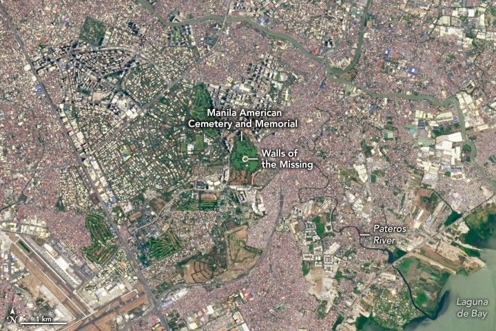

A Final Resting Place in the Philippines
The American Battle Monuments Commission maintains 26 military cemeteries and 31 federal monuments outside the United States that honor soldiers killed during World War I, World War II, the Philippine-American War, Mexican-American War, Korean War, and Vietnam War.
The largest of these is the Manila American Cemetery and Memorial, the final resting place of more than 16,859 American servicemen and women, most of whom lost their lives in New Guinea and the Philippines during World War II.
The OLI (Operational Land Imager) on Landsat 8 captured this image of the cemetery on April 10, 2025. The 152-acre circular burial ground sits on a prominent plateau overlooking Laguna de Bay, the largest lake in the Philippines.
At its center lies a chapel and two semicircular Walls of the Missing with tablets that list more than 36,100 names. In the same complex, 25 mosaic maps depict several battles in the Pacific, including the Battle of Leyte Gulf, the Reoccupation of Manila, and the Liberation of the Philippines.
Lists of names on a tablet from the Walls of the Missing are visible in the background of a photograph of the cemetery. In the foreground, a blue mosaic map depicts troop movements during a battle for the Philippines.
The first burials took place at the Manila American Cemetery in 1949, but the cemetery was not officially dedicated until 1960. In the intervening time, U.S. forces transported thousands of remains from temporary battlefield cemeteries on remote islands throughout the Pacific to Manila.
Even today, remains continue to be found. Of the 36,100 names listed on the Walls of the Missing, 505 bronze rosettes have been placed next to certain names, indicating that the missing soldier had been recovered and identified.